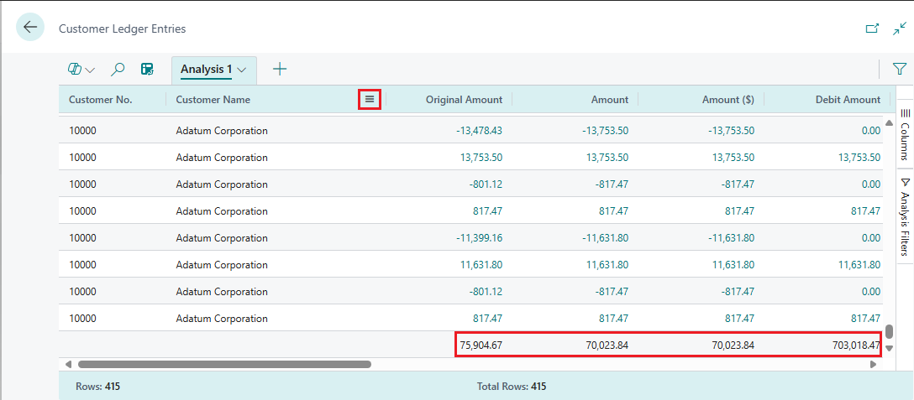
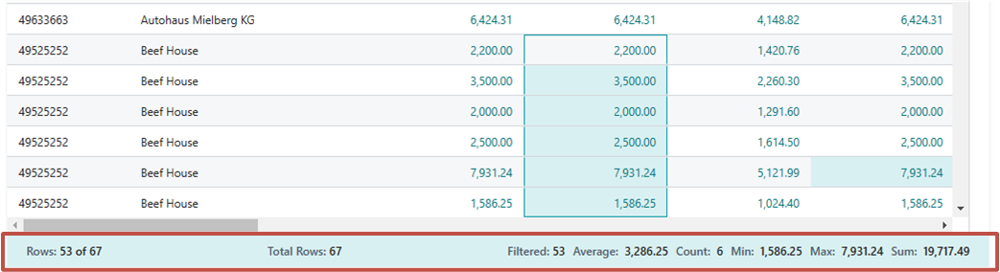
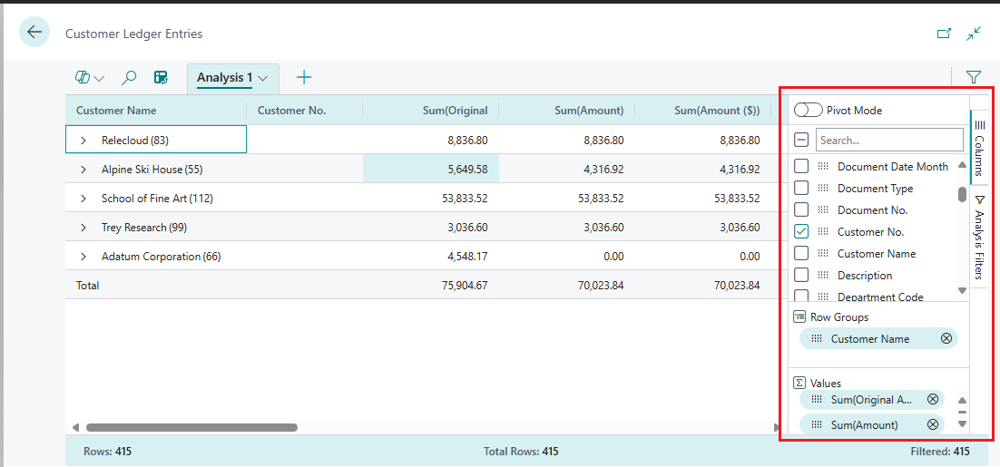
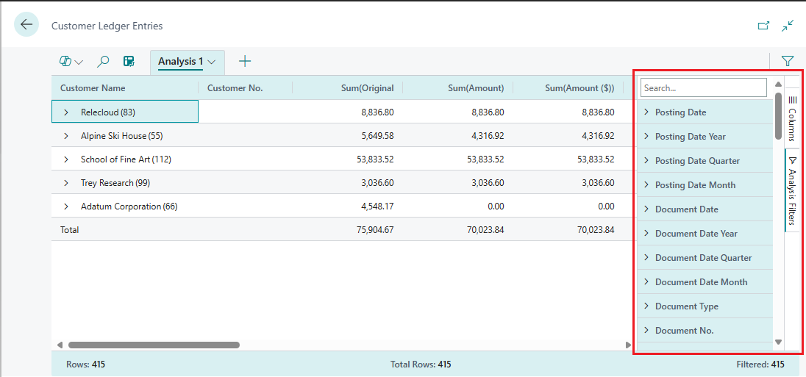
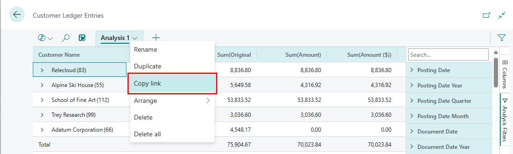
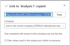

Analyse der Listenseite und Abfrage von Daten mithilfe des Feature für die Datenanalyse
GILT FÜR: Öffentliche Vorschau in Business Central 2023, 1. Veröffentlichungszyklus und höher, zur Analyse von Listenseiten; Allgemein verfügbar im 2. Veröffentlichungszyklus von Business Central 2023 zum Analysieren von Daten aus Listenseiten und Abfragen.
In diesem Artikel wird erklärt, wie Sie das Feature für die Datenanalyse von Listenseiten und Abfragen aus verwenden. Mit der Datenanalyse können Sie Daten direkt von der Seite aus analysieren, ohne einen Bericht ausführen oder eine andere Anwendung wie Excel öffnen zu müssen. Das Feature bietet eine interaktive und vielseitige Möglichkeit, Daten zu berechnen, zusammenzufassen und zu untersuchen. Anstatt Berichte mit unterschiedlichen Optionen und Filtern auszuführen, können Sie mehrere Registerkarten hinzufügen, die unterschiedliche Aufgaben oder Ansichten der Daten darstellen. Einige Beispiele sind „Meine Debitoren“, „Artikel verfolgen“, „Kürzlich hinzugefügte Kreditoren“, „Verkaufsstatistiken“ oder jede andere Ansicht sein, die Sie sich vorstellen können.
Tipp
Das Gute am Feature für die Datenanalyse ist, dass sie die zugrunde liegenden Daten einer Listenseite oder Abfrage nicht ändert. Außerdem wird das Layout der Seite oder Abfrage nicht geändert, wenn sie sich nicht im Analysemodus befindet. Der beste Weg, um zu erfahren, was Sie im Analysemodus tun können, ist, ihn auszuprobieren.
Voraussetzungen
- Wenn Sie Version 22 von Business Central verwenden, befindet sich das Feature für die Datenanalyse in der Vorschauversion. Daher muss es ein Administrierender aktivieren, bevor Sie es verwenden können. Um ihn zu aktivieren, gehen Sie auf die Seite Funktionsverwaltung und schalten Sie Funktionsaktualisierung: Analysemodus, schnelle Datenanalyse direkt in Business Central ein. Weitere Informationen finden Sie unter Funktionsverwaltung.
- In Version 23 und höher muss Ihrem Konto der Berechtigungssatz DATENANALYSE – AUSFÜHREN zugewiesen werden oder die Ausführungsberechtigung für das Systemobjekt enthalten 9640 Daten zulassen Analysemodus. Als Administrator können Sie diese Berechtigungen für Benutzer ausschließen, die keinen Zugriff auf den Analysemodus haben sollen.
Hinweis
Einige Listenseiten haben den Schalter Analysemodus aktivieren zum Aktivieren des Analysemodus nicht. Der Grund dafür ist, dass Entwickler den Analysemodus auf bestimmten Seiten deaktivieren können, indem sie die AnalysisModeEnabled-Eigenschaft in AL verwenden.
Erste Schritte
Gehen Sie wie folgt vor, um zu beginnen, den Analysemodus zu verwenden.
Tipp
Zum Analysemodus gehört auch ein Copilot-Feature namens Analyseunterstützung, das Ihnen den Einstieg eventuell erleichtert. Weitere Informationen zur Analyseunterstützung mit Copilot
Öffnen Sie die Listenseite oder Abfrage.
Um beispielsweise mit der Seite Debitorenbucheinträgen zu arbeiten, wählen Sie die
 Symbol (Alt+Q) geben Sie Hauptbuchhaltungsposten ein und wählen Sie dann den zugehörigen Link aus.
Symbol (Alt+Q) geben Sie Hauptbuchhaltungsposten ein und wählen Sie dann den zugehörigen Link aus. Wählen Sie in der Aktionsleiste oben auf der Seite die Schaltfläche Analysemodus aktivieren
 aus.
aus.Der Analysemodus öffnet die Daten in einer Umgebung, die für die Datenanalyse optimiert ist. Im Analysemodus wird die normale Aktionsleiste durch eine spezielle Analysemodusleiste ersetzt. Die folgende Abbildung veranschaulicht die verschiedenen Bereiche einer Seite im Analysemodus.
Jeder Bereich wird in den folgenden Abschnitten erläutert.
Verwenden Sie die verschiedenen Bereiche, um Daten zu manipulieren, zusammenzufassen und zu analysieren. Details finden Sie in den folgenden Abschnitten.
Wenn Sie den Analysemodus beenden möchten, wählen Sie die Schaltfläche Analysemodus verlassen .
Die hinzugefügten Analyseregisterkarten bleiben erhalten, bis Sie sie löschen. Wenn Sie wieder in den Analysemodus zurückkehren, sehen sie genauso aus wie beim letzten Mal.
{kind=link}
Hinweis
Die im Analysemodus angezeigten Daten werden durch die auf der Listenseite eingestellten Filter oder Ansichten gesteuert. Auf diese Weise können Sie Daten vor dem Aufrufen des Analysemodus vorfiltern.
Mit dem Analysemodus arbeiten
Im Analysemodus ist die Seite in zwei Bereiche unterteilt:
- Der Hauptbereich, bestehend aus dem Datenbereich (1), der Übersichtsleiste (2) und der Registerkartenleiste (5).
- Der Datenbearbeitungsbereich, der aus zwei Bereichen besteht: Spalten (3) und Analysefilter (4).
Datenbereich (1)
Im Datenbereich werden die Zeilen und Spalten der Listenseitenabfrage angezeigt und die Daten zusammengefasst. Der Datenbereich bietet eine vielseitige Möglichkeit, das Layout der Spalten zu steuern und eine schnelle Möglichkeit, eine Zusammenfassung der Daten zu erhalten. Bei Spalten, die numerische Werte enthalten, wird die Summe aller Werte in der Spalte der letzten Zeile angezeigt, es sei denn, Sie legen Zeilengruppen fest. In diesem Fall erscheinen die Summen als Zwischensumme für die Gruppen.

- Um eine Spalte zu verschieben, wählen Sie sie aus und ziehen Sie sie an die Stelle, an der sie in Ihrer Analyse am sinnvollsten ist.
- Um nach einer Spalte zu sortieren, wählen Sie die Spaltenüberschrift aus. Um nach mehreren Spalten zu sortieren, halten Sie die Umschalttaste gedrückt, während Sie die Spaltenüberschriften auswählen, nach denen sortiert werden soll.
Um auf verschiedene Aktionen zuzugreifen, die Sie für Spalten ausführen können, gehen Sie mit der rechten Maustaste auf die Spalte oder zeigen Sie mit der Maus darauf und wählen Sie das Menüsymbol . Beispiel:
- Um eine Spalte an den Datenbereich anzuheften, damit sie beim Scrollen nicht vom Bildschirm verschwindet, wählen Sie > Spalte anheften > Link anheften öffnet.
- Definieren Sie Datenfilter direkt in der Spaltendefinition, anstatt zum Bereich Analysefilter zu gehen. Sie können immer noch Details zu verwandten Daten und für jede Zeile einsehen und die Karte öffnen, um mehr über eine bestimmte Entität zu erfahren.
- Verwenden Sie den Datenbereich, um mit den Daten zu interagieren. Für Spalten, die numerische, summierbare Werte enthalten, können Sie deskriptive Statistiken zu einer Gruppe von Feldern erhalten, indem Sie sie markieren. Die Statistiken erscheinen in der Statusleiste (2) unten auf der Seite.
- Exportieren Sie Daten im Excel- oder CSV-Format. Klicken Sie mit der rechten Maustaste auf den Datenbereich oder eine Auswahl von Zellen, um sie zu exportieren.
Zusammenfassungsleiste (2)
Die Zusammenfassungsleiste befindet sich unten auf der Seite und zeigt Statistiken zu den Daten in der Listenseite oder Abfrage an. Wenn Sie mit Spalten interagieren, deren Werte summiert werden können, z. B. mehrere Zeilen in einer Spalte auswählen, die Beträge anzeigt, werden die Daten aktualisiert.

Die folgende Tabelle beschreibt die verschiedenen Zahlen, die im Summenbereich angezeigt werden:
| Anzahl | Beschreibung |
|---|---|
| Zeilen | Die Anzahl der ausgewählten Zeilen als Teil der Gesamtzahl der verfügbaren Zeilen. |
| Zeilen gesamt | Die Anzahl der Zeilen in der ungefilterten Liste oder Abfrage. |
| Gefiltert | Die Anzahl der Zeilen, die als Ergebnis der auf die Liste oder Abfrage angewendeten Filter angezeigt werden. |
| Durchschnitt | Der Durchschnittswert in allen ausgewählten summierbaren Feldern. |
| Anzahl | Die Anzahl der ausgewählten Zeilen. |
| Min. | Der minimale Wert in allen ausgewählten summierbaren Feldern. |
| Max. | Der maximale Wert in allen ausgewählten summierbaren Feldern. |
| Summe | Die Gesamtsumme aller Werte in den ausgewählten summierbaren Feldern. |
Spalten (3)
Der Bereich Spalten ist einer von zwei Bereichen, die zusammenarbeiten, um Ihre Analyse zu definieren. Der andere Bereich ist der Analysefilter. Der Spalten-Bereich wird verwendet, um die Daten zusammenzufassen. Verwenden Sie den Bereich Spalten, um festzulegen, welche Spalten in die Analyse einbezogen werden sollen.

| Bereiche | Description |
|---|---|
| Suchen/aktivieren oder deaktivieren Sie alle Kästchen | Suche nach Spalten. Um alle Spalten auszuwählen/abzuwählen, aktivieren Sie das Kontrollkästchen. |
| Kontrollkästchen | Dieser Bereich enthält ein Kontrollkästchen für jedes Feld in der Quelltabelle der Liste oder Abfrage. Verwenden Sie diesen Bereich, um zu ändern, welche Spalten angezeigt werden. Aktivieren Sie ein Kontrollkästchen, um die Spalte für das Feld auf der Seite anzuzeigen; Deaktivieren Sie das Kontrollkästchen, um die Spalte auszublenden. |
| Zeilengruppen | Verwenden Sie diesen Bereich, um Daten nach einem oder mehreren Feldern zu gruppieren und zu summieren. Sie können nur nicht numerische Felder wie Text-, Datums- und Zeitfelder einschließen. Zeilengruppen werden häufig im Pivot-Modus verwendet. |
| Werte | Verwenden Sie diesen Bereich, um Felder anzugeben, für die Sie eine Gesamtsumme wünschen. Sie können nur Felder einschließen, die Zahlen enthalten, die addiert werden können; wie beispielsweise keine Text-, Datums- oder Zeitfelder. |
Um ein Feld von einem Bereich in einen anderen zu verschieben, wählen Sie das Greifsymbol neben der Spalte in der Liste an. Ziehen Sie sie in den Zielbereich. Sie werden daran gehindert, ein Feld in einen Bereich zu verschieben, in dem es nicht erlaubt ist.
Analysefilter (4)
Im Bereich Analysefilter können Sie weitere Datenfilter für Spalten festlegen, um die Einträge in der Liste einzuschränken. Legen Sie Filter für Spalten fest, um die Einträge in der Liste und die nachfolgenden Summen basierend auf einem von Ihnen definierten Kriterium auf nur die Einträge zu beschränken, an denen Sie interessiert sind. Angenommen, Sie sind nur an Daten für einen bestimmten Kunden oder Verkaufsaufträge interessiert, die einen bestimmten Betrag überschreiten. Um einen Filter festzulegen, wählen Sie die Spalte und die Vergleichsoperation aus der Liste aus (z. B. Gleich oder Beginnt mit), und geben Sie dann den Wert ein.

Hinweis
Die zusätzlichen Filter gelten nur für die aktuelle Analyse-Registerkarte. Auf diese Weise können Sie genau die zusätzlichen Datenfilter definieren, die für eine bestimmte Analyse benötigt werden.
Registerkarten (5)
Im Registerkartenbereich oben können Sie verschiedene Konfigurationen (Spalten und Analysefilter) auf separaten Registerkarten erstellen, wobei Sie Daten auf den Registerkarten unabhängig voneinander bearbeiten können. Es gibt immer mindestens eine Registerkarte, die standardmäßig Analyse 1 heißt. Das Hinzufügen weiterer Registerkarten ist vorteilhaft, um häufig verwendete Analysekonfigurationen für einen Datensatz zu speichern. Sie haben beispielsweise Registerkarten zum Analysieren von Daten im Pivot-Modus und andere Registerkarten, die nach einer Teilmenge von Zeilen filtern. Einige Registerkarten zeigen möglicherweise eine detaillierte Ansicht mit vielen Spalten an, und andere zeigen nur einige Schlüsselspalten an.
Hier sind einige Hinweise zum Arbeiten mit mehreren Analyseregisterkarten:
- Um eine neue Registerkarte hinzuzufügen, wählen Sie das große + Zeichen neben der letzten Analyseregisterkarte aus.
Wählen Sie auf einer Registerkarte den Abwärtspfeil aus, um auf eine Liste mit Aktionen zuzugreifen, die Sie auf einer Registerkarte ausführen können, z. B. umbenennen, duplizieren, löschen und verschieben.
- Löschen löscht die aktuell geöffnete Registerkarte. Alle löschen löscht alle Registerkarten, die Sie hinzugefügt haben, mit Ausnahme der Standardregisterkarte Analyse 1.
Sie können die Analyse 1 nicht vollständig entfernen, aber Sie können sie umbenennen, indem Sie die Aktion Umbenennen verwenden und die Änderungen, die Sie vorgenommen haben, mithilfe von Löschen oder Alle löschen löschen.
Die hinzugefügten und konfigurierten Analyseregisterkarten bleiben erhalten, bis Sie sie löschen. Wenn Sie wieder in den Analysemodus zurückkehren, sehen sie genauso aus wie beim letzten Mal.
Tipp
Die von Ihnen eingerichteten Registerkarten sind nur für Sie sichtbar. Andere Benutzer sehen nur die Registerkarten, die sie eingerichtet haben.
- Sie können Analyseregisterkarten kopieren. Das Kopieren kann beispielsweise nützlich sein, um mit dem Ändern einer Registerkarte zu experimentieren, ohne das Original zu verändern. Das Kopieren ist auch dann sinnvoll, wenn Sie verschiedene Varianten derselben Analyse erstellen möchten.
Datumshierarchien
Im Analysemodus werden Datumsfelder des Datensatzes in einer Jahr-Quartal-Monat-Hierarchie aus drei separaten Feldern generiert. Diese Hierarchie basiert auf dem normalen Kalender und nicht auf in Business Central definierten Geschäftskalendern.
Die zusätzlichen Felder werden <field name> Jahr, <field name> Quartal und <field name> Monat benannt. Wenn der Datensatz beispielsweise ein Feld mit dem Namen Buchungsdatum enthält, dann besteht die entsprechende Datumshierarchie aus Feldern namens Buchungsdatum Jahr, Buchungsdatum Quartal und Buchungsdatum Monat.
Hinweis
Die Datumshierarchie gilt derzeit nur für Felder vom Typ Datum, nicht für Felder vom Typ datetime.
Pivot-Modus
Sie können den Pivot-Modus verwenden, um große Mengen numerischer Daten zu analysieren und Daten nach Kategorien und Unterkategorien zu subsummieren. Der Pivot-Modus ist wie Pivot-Tabellen in Microsoft Excel.
Um den Pivot-Modus ein- und auszuschalten, schalten Sie den Pivot-Modus im Bereich Spalten (3) ein. Wenn Sie den Pivot-Modus aktivieren, wird der Bereich Spaltenbeschriftungen im Bereich angezeigt. Verwenden Sie den Bereich Spaltenbeschriftungen, um Gesamtsummen für Zeilen in Kategorien zu gruppieren. Felder, die Sie dem Bereich Spaltenbeschriftungen hinzufügen, werden als Spalten im Datenbereich (1) angezeigt.
Der Aufbau der Datenanalyse im Pivot-Modus umfasst das Verschieben von Feldern in die drei Bereiche: Zeilengruppen, Spaltenbeschriftungen, und Werte. Die folgende Abbildung zeigt, wo die Felder dem Datenbereich (1) zugeordnet sind, wobei sum die berechneten Daten und optional Werte sind.
| Spaltenbeschriftung | Spaltenbeschriftung | |||
|---|---|---|---|---|
| Zeilengruppe | Wert | Wert | Wert | Wert |
| Zeile | Summe | Summe | Summe | Summe |
| Zeile | Summe | Summe | Summe | Summe |
| Zeile | Summe | Summe | Summe | Summe |
| Zeile | Summe | Summe | Summe | Summe |
Tipp
Spalten mit nur wenigen möglichen Werten sind die besten Kandidaten für die Verwendung in Spalte Werte.
Analysieren Sie große Datenmengen
Wenn der Datensatz, den Sie analysieren möchten, mehr als 100.000 Zeilen umfasst, wird empfohlen, einen Analysemodus aufzurufen, der für große Datensätze optimiert ist. Wenn Sie in diesen Modus wechseln, gibt es derzeit zwei Einschränkungen:
Die Formatierung von Feldern der folgenden vier Datentypen kann sich ändern:
- Währung
- Dezimalstellen (wird immer mit zwei Dezimalstellen angezeigt)
- Datumsangaben (wird immer im Format JJJJ-MM-TT angezeigt)
- Zeitzonen
Felder, die im Pivot-Modus verwendet und zu Spaltenbeschriftungen hinzugefügt werden, müssen eine geringe Anzahl eindeutiger Werte aufweisen.
Wenn Sie den Pivot-Modus aktivieren und ein Feld in den Bereich Spaltenbeschriftungen ziehen, wo die zugrunde liegenden Daten für dieses Feld zu viele unterschiedliche Werte haben, reagiert Ihre Browserregisterkarte möglicherweise nicht mehr. Der Browser wird schließlich geschlossen und Sie müssen in einer neuen Sitzung von vorne beginnen. Pivotieren Sie in diesem Fall entweder nicht auf dieses Feld oder legen Sie einen Filter für das Feld fest, bevor Sie es zum Bereich Spaltenbeschriftungen hinzufügen.
Ad-hoc-Datenanalyse teilen
Nachdem Sie eine Analyse auf einer Registerkarte vorbereitet haben, können Sie diese direkt vom Client aus als Link mit Ihren Teammitgliedern und anderen in Ihrer Organisation teilen. Nur Empfänger, die eine Erlaubnis zum Unternehmen und den Daten haben, können den Link nutzen.
Wählen Sie auf der Registerkarte „Analyse“ den Abwärtspfeil und dann Link kopieren aus.

Der Dialog Link zu <tab name> wird geöffnet.
Standardmäßig wird die von Ihnen freigegebene Analyse mit der Seite oder Abfrage in dem Unternehmen verknüpft, in dem Sie gerade arbeiten, was durch
company=<company_name>im URL-Feld neben der Schaltfläche Kopieren angezeigt wird. Wenn Sie einen Link zu einer Analyse senden möchten, die nicht mit einem bestimmten Unternehmen verknüpft ist, setzen Sie das Feld Unternehmen: auf Keine Verknüpfung zu einem bestimmten Unternehmen.
Klicken Sie auf Kopieren.
- Fügen Sie den Link in das Kommunikationsmedium Ihrer Wahl ein, z. B. Word, Outlook, Teams, OneNote usw.
- Empfänger können den Link auswählen und die Analyse für die Seite oder Abfrage in Business Central öffnen. Sie werden aufgefordert, einen Namen für die neue Analyseregisterkarte anzugeben, die sie erstellen.
Beispiele für das Analysieren von Daten
Nutzen Sie das Feature Datenanalyse zum schnellen Faktencheck und zur Ad-hoc-Analyse:
- Wenn Sie keinen Bericht ausführen möchten.
- Wenn für Ihren speziellen Bedarf kein Bericht vorhanden ist.
- Wenn Sie schnell iterieren möchten, um sich einen guten Überblick über einen Teil Ihres Unternehmens zu verschaffen.
Die folgenden Abschnitte enthalten Beispiele für Szenarien für viele der Funktionsbereiche in Business Central.
Beispiele: Finanzen (Debitorenkonten)
Gehen Sie wie folgt vor, um herauszufinden, wie viel Ihre Debitoren Ihnen, eventuell aufgeschlüsselt nach Fälligkeitszeiträumen, schulden:
- Öffnen Sie die Liste Debitorenposten und wählen Sie :::image type="content" source="media/analysis-mode-icon.png" alt-text="Analysemodus eingeben":::, um den Analysemodus einzuschalten.
- Gehen Sie zum Menü Spalten und entfernen Sie alle Spalten (wählen Sie das Kästchen rechts neben dem Feld Suchen aus).
- Aktivieren Sie den Schalter Pivot-Modus (rechts über dem Feld Suchen).
- Ziehen Sie das Feld Debitorenname zum Bereich Zeilengruppen und ziehen Sie Restbetrag zum Bereich Werte.
- Ziehen Sie das Feld Fälligkeitsdatum (Monat) auf den Bereich Spaltenbeschriftungen.
- Um die Analyse auf ein bestimmtes Jahr oder Quartal zu beschränken, wenden Sie im Menü Analysefilter (rechts unter dem Menü Spalten) einen Filter an.
- Benennen Sie Ihre Analyseregisterkarte in Kontorückblick nach Monat oder in etwas anderes um, das diese Analyse beschreibt.
Beispiele für die Ad-hoc-Datenanalyse nach Funktionsbereich
Für viele der Funktionsbereiche in Business Central gibt es Artikel mit Beispielen für Ad-hoc-Datenanalysen.
| Bei der Arbeit mit ... | Siehe |
|---|---|
| Finanzen | Ad-hoc-Analysen der Finanzdaten |
| Anlagen | Ad-hoc-Analysen von Anlagendaten |
| Nachhaltigkeit | Ad-hoc-Analysen von Nachhaltigkeitsdaten |
| Vertrieb | Ad-hoc-Analyse von Vertriebsdaten |
| Einkauf | Ad-hoc-Analyse von Einkaufsdaten |
| Bestand | Ad-hoc-Analyse von Bestandsdaten |
| Audit | Ad-hoc-Analyse von Änderungsprotokolldaten Den Benutzerstatus nach Lizenztyp analysieren |
Einschränkungen im 1. Veröffentlichungszyklus 2023 (Vorschau)
Für die öffentliche Vorschau dieser Funktion gelten die folgenden Einschränkungen:
- Die Ansicht im Analysemodus hat ein Limit von 100.000 Zeilen. Wenn Sie dieses überschreiten, erhalten Sie eine entsprechende Nachricht. Um diese Einschränkung zu umgehen, setzen Sie die Filter auf der Seite, bevor Sie in den Analysemodus wechseln, sofern dies möglich ist. Vielleicht möchten Sie zum Beispiel eine bestimmte Debitorengruppe analysieren oder nur Daten aus dem laufenden Jahr haben. Sie können auch eine vordefinierte Ansicht auswählen, wenn diese für Ihre Analyse geeignet ist.
- Die Funktion „Datenanalyse teilen“ ist nicht verfügbar.
- Die Möglichkeit, bevorzugte Datenanalyseoptionen auf Listenseiten zu speichern und Analysemenüs pro Analyseregisterkarte zu speichern, ist derzeit nicht verfügbar.
Siehe auch
Ad-hoc-Datenanalysen nach Funktionsbereich
Ad-hoc-Datenanalyse
In Excel anzeigen und bearbeiten